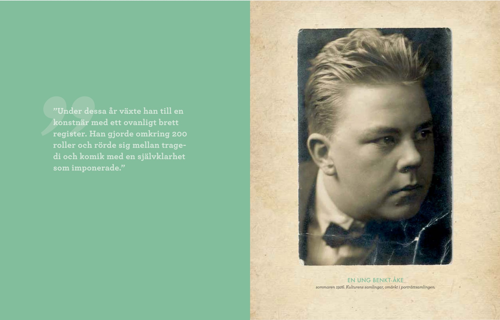

Målgrupp
Kulturens årsbok vänder sig i första hand till föreningens medlemmar. Texterna ska ligga på en nivå som påminner om populärvetenskapliga tidningsartiklar: lättillgängliga, engagerande och informativa.
Till skillnad från vetenskapliga texter används inte formella stilgrepp eller akademisk källhantering. I slutet av varje artikel listas i stället de viktigaste källorna som använts, tillsammans med förslag på vidare läsning. Mer information om detta finns under rubriken Källhänvisning, källhantering, litteratur och lästips.
Omfattning
Omfattningen på artiklar i Kulturens årsbok har alltid varierat, beroende på ämne och framställning, och så ska det även fortsätta vara.
Som riktmärke gäller en textmängd på cirka 7-8 sidor i tryckt format. Detta motsvarar ungefär 3 A4-sidor i Word, eller cirka 13 500 tecken inklusive blanksteg. Det finns utrymme för flexibilitet, men meddela gärna redaktören i god tid om din artikel behöver avvika från detta omfång.
Format
Alla artiklar genomgår en omfattande grafisk formgivning. Det är därför inte aktuellt att använda någon stilmall. Skicka din text i Word-format via e-post till johan.hofvendahl@kulturen.com.
Artikelns titel
Titeln får innehålla högst 60 tecken inklusive blanksteg.
Årtal och årtalsperioder
- Skriv 1930-talet, 1800-talet etc. - inte trettiotalet, artonhundratalet.
- Använd långt tankstreck i årtalsperioder: 1936–2003 - inte 1936-2003.
- Upprepa inte samma århundrade: skriv 1936–42 - inte 1936–1942.
Inga förkortningar - skriv ut allt
- Skriv till exempel, bland annat, det vill säga - inte t.ex., bl.a., d.v.s. etc.
- Skriv procent, kvadratmeter, millimeter - inte %, m², mm etc.
Citat - korta i löptext, långa som blockcitat
- Korta citat skrivs med citattecken i löptext.
- Längre citat skrivs som blockcitat, det vill säga med blankrad före och efter citat.
- Utelämnade ord i citat anges med hakparenteser och tre punkter.
En tid han kallar ”mina hundår”.
Detta […] beror på en längre tids dålig sömn.
Tabeller, diagram och figurer
Om du behöver tabeller, diagram eller andra illustrationer:
- Skicka allt underlag, det vill säga all data, till redaktör i Excel-fil eller annat lämpligt format.
- Placera illustrationen på den plats i texten där du önskar att den ska vara.
- Skriv förklarande text under illustrationen. Vad illustrerar tabellen eller diagrammet?
Bilder
En del författare har egna bildönskemål, andra behöver redaktionell hjälp. I Kulturens föremålsdatabas och arkiv finns ett stort utbud av bilder och redaktionen hjälper gärna till att leta rätt på bra bildmaterial till din text.
Det finns också möjlighet att ta helt nya bilder och visst utrymme för att köpa bildrättigheter. Dock krävs god framförhållning, så kommunicera dina bildbehov så tidigt som möjligt.
Om du behöver hjälp, kontakta intendent Nina Davis (nina.davis@kulturen.com, 076-539 04 22) och/eller fotograf Nelly Hercberg (nelly.hercberg@kulturen.com, 076-539 04 93).
Viktigt i arbetet med bilder är att du informerar redaktionen, gärna i din text, var du önskar att bilderna uppträder, att du skriver egna bildtexter och att du anger all nödvändig bildinformation: fotograf och källa.
Titlar och namn på företeelser och ting
Titlar och namn på till exempel böcker, tidningar, utställningar och projekt ska skrivas kursivt.
I utställningen Metropolis finns ett föremål som...
Rubriker och rubriknivåer
Vi föredrar artiklar utan rubriker, men i vissa fall kan det vara nödvändigt på grund av ämnets art och behandling. Om du behöver använda rubriker, använd högst två nivåer, var konsekvent och låt nivåerna framträda tydligt i din text.
Källhänvisning, källhantering, litteratur och lästips
Kulturens årsboksartiklar skiljer sig lite från praxis i vetenskapliga artiklar. Fotnoter används inte. Källor anges direkt i löptext. Vid användning av citat ska även sidnummer anges, alternativt webbadress och datum.
Berndt Tallerud skriver i sin artikel Pesten i Sverige 1710–13 (2010) att ”kropparna i åtskilliga fall fick ligga ojordade länge” (s. 930).
I stället för referenslista, där alla källor anges, ska artikeln avslutas med ett avsnitt, Litteratur och lästips. Där listar du de högst fem källor som har varit viktigast i ditt arbete samt högst fem tips för vidare läsning.
Format spelar ingen roll, så länge du är tydlig med vilka källor och tips du hänvisar till.
Inlämning text
Texter och bilder skickas till johan.hofvendahl@kulturen.com.
Notera: Vi praktiserar endast ett inlämningstillfälle. Även om Kulturens årsboksredaktion kommer att korrekturläsa din text och göra de ändringar som anses vara nödvändiga - i tveksamma fall kommer vi att kontakta dig - förväntas din inskickade text vara av tillräckligt hög kvalitet för publicering.
Vi förutsätter att du noggrant redigerar och granskar din artikel innan du skickar in den. Texten ska vara välstrukturerad, fri från syftningsfel och stavfel samt hålla hög standard av språklig klarhet och precision.
Artikelexempel
Här visas ett exempel på en färdig artikel.
